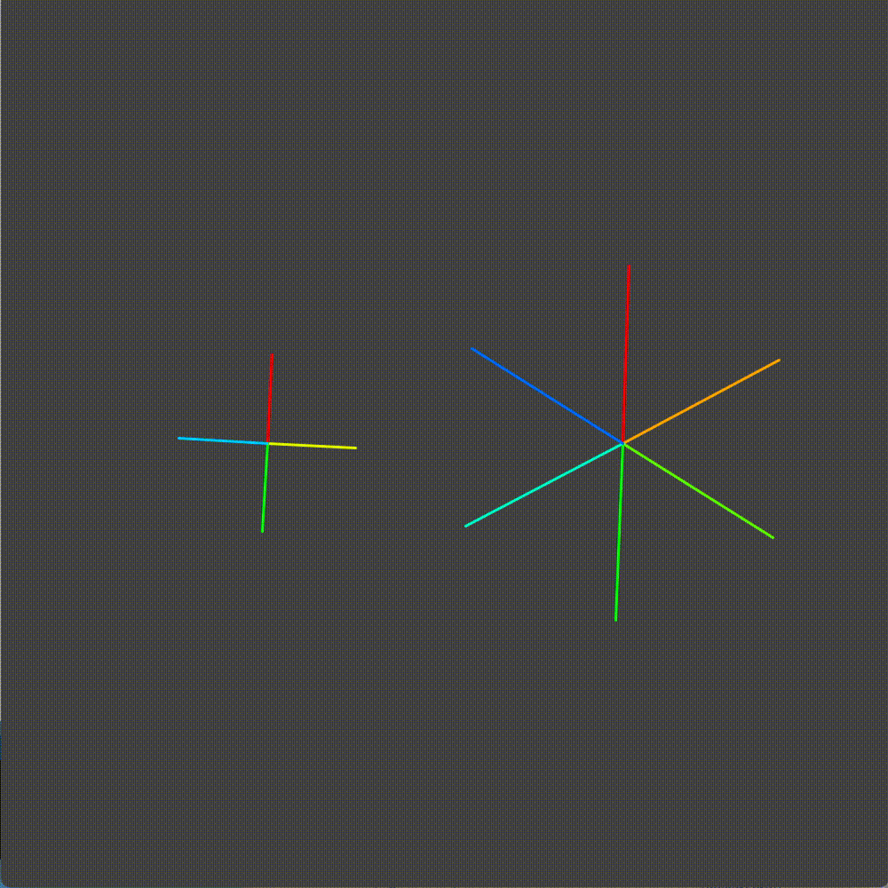
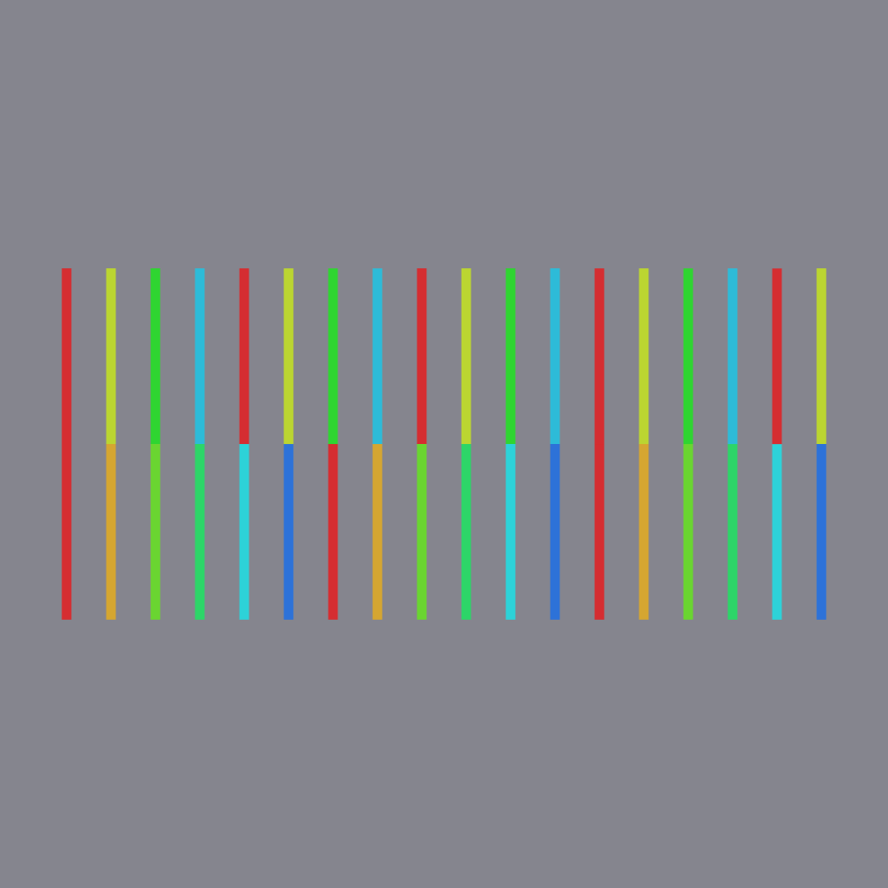
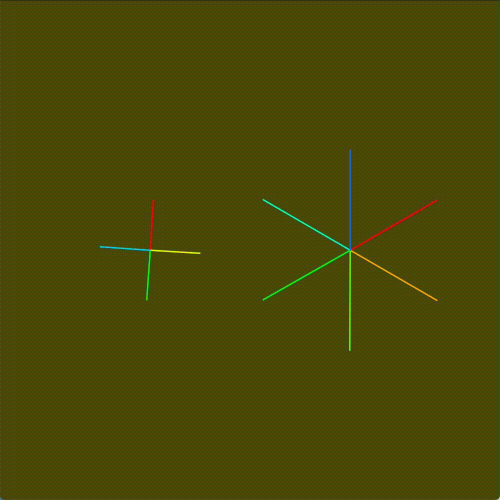
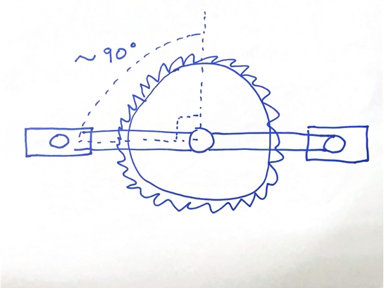
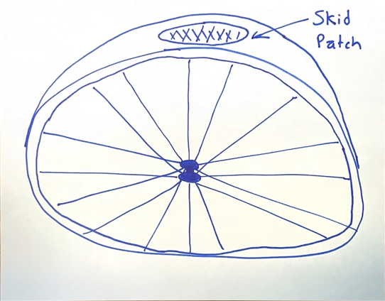
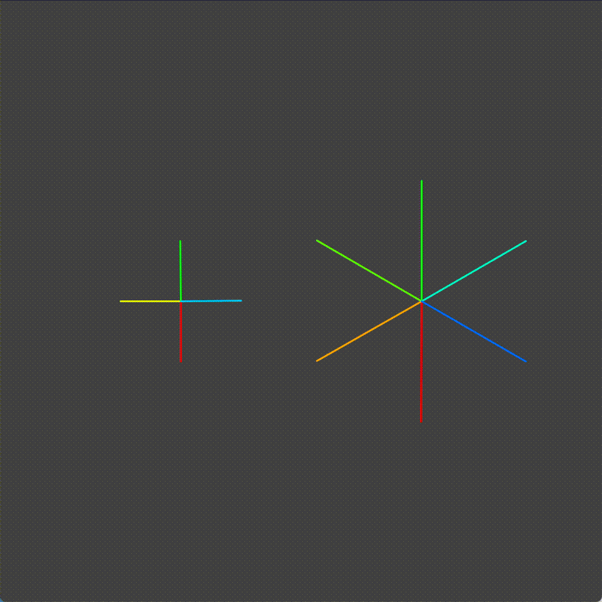
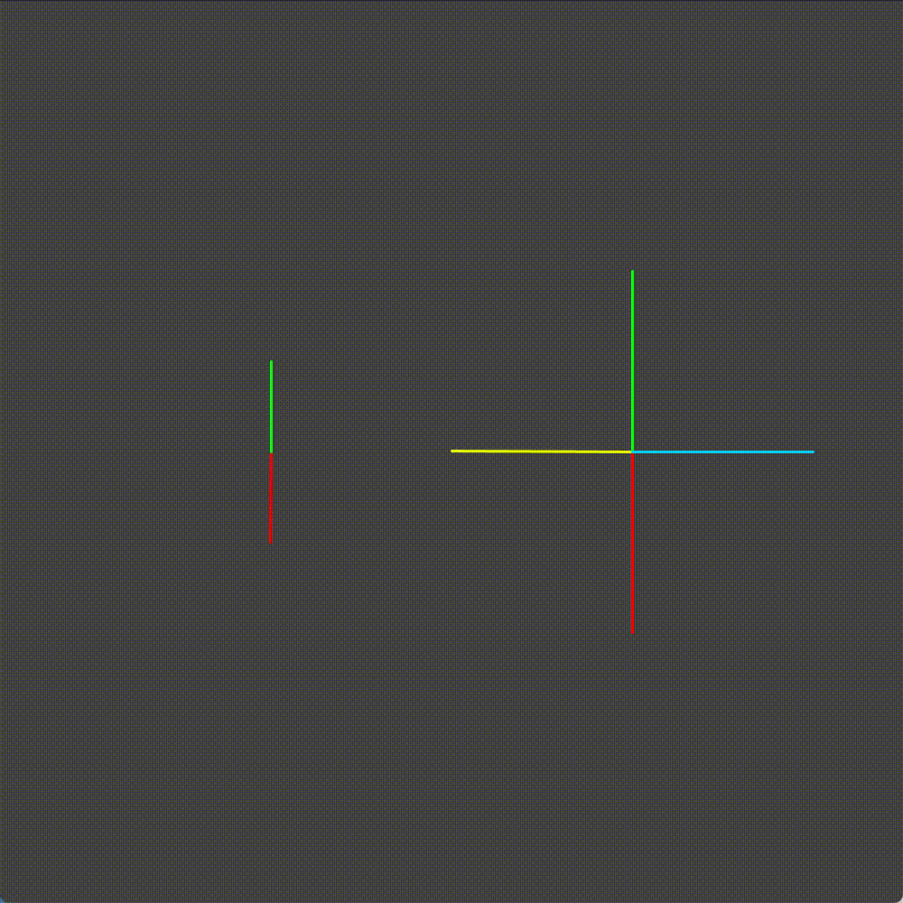
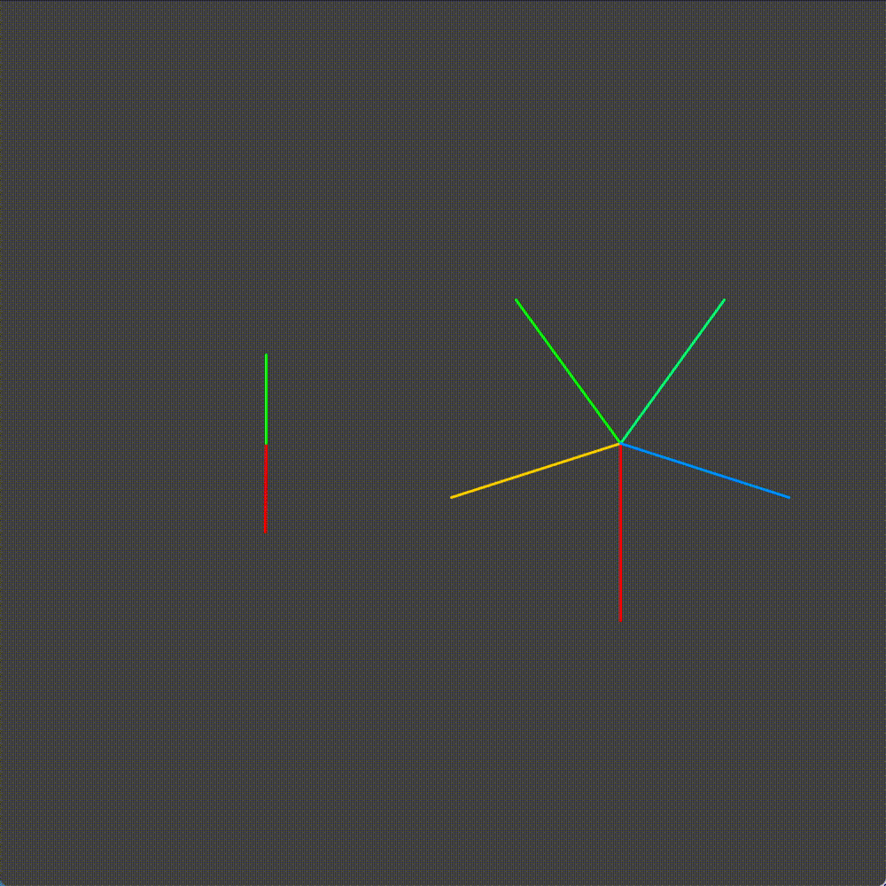

How Fixed Gear Bicycles Work
Disclaimer: I am a professional software engineer, a mathematical hack, and a fixed-gear noob. Take what I say with a grain of salt ;)
I've recently picked up a new hobby: riding fixed gear bicycles, or fixies for short. A fixie is a bike with:
- Only one speed.
- A fixed rear gear. If the chain moves, so does the wheel.
- As few brakes as possible.
Why would a person want to ride such a bike? Because it's cool. It's the four way lovechild between the skateboarding community, manual transmission cars, bicycles, and any form of self-inflicted pain(read: running, ice baths).
Because most fixed gear riders try to install as few brakes as possible, the first thing a fixed gear rider learns is how to stop. One of the major ways of stopping is "skidding". This is where you lean forward and lock out your legs. Which causes the back wheel to stop moving and "skid" on the pavement. Thereby slowing down the bike and its rider.

A "super cool" skid done by me
Naturally, skidding your tires burns holes in your tires. Which can get expensive fast. As a result, a lot of thought has gone into maximizing the bang-for-your-buck of tires. For example, here's a calculator showing exactly the pattern of skid-patches one would get with a particular configuration.
If you play with the skid patch program, some unintuitive patterns appear. Why in the world would different gears produce different skid patterns on the wheel? Wouldn't it just be random?
In this article, you will explore with me as I try to deduce my way to the bottom of this. I'm going to use Processing to build a bicycle gear system to help answer the questions:
- Why does number of teeth impact the number of skid patches?
- Why does an odd total number of teeth produce more skid patches?
- Why does ambidextrous skidding produce more skids?
First Iteration - "Analog" Gears
 I started by building a simulator of bicycle gears in Processing. Here we have the platonic ideal of a bicycle crankset. The rate at which the chainring (right gear) spins influences the rate at which the cog (left gear) is proportional to their relative number of teeth.
Only one problem here. Looking at these gears doesn't tell me much more than if I simply took my bike and looked at its gears. There is too much going on here.
This got me thinking:
"How can this be simplified?"
I started by putting on my first-principles hat.
- What's really happening with the gears?
- How do gears actually work?
- What can and cannot be changed and still maintain the fundamental properties?
This is what I came up with:
What the bicycle gears are actually doing
The chain between the two gears only serves to translate the force from one gear to another. If we wanted to, we can remove this and have the gears driving each other directly.
Each tooth is preventing its mate (mate being the corresponding tooth on the other gear) from moving freely. By moving any individual tooth, it moves its mates, and as a result it moves the entire gear and system as a whole.
By this logic, the radius of each gear plays no part in the motion of the drivechain.
I then began thinking about each gear not as a repeating disc of teeth, but as an infinitely repeating series of teeth.
 This helped me to see the pattern. The pair of gears represents a series of possible configurations. Each configuration is a possible state. This led me to my next model.
Second Iteration - "Hybrid" Gears
 Taking what I learned from the last section, I converted the chainring to move at the same rate, but move in discrete steps. This is also because whenever one is doing a skid, they usually have their feet in a particular configuration.

This configuration leads to the best leverage and stopping power. In this animation we can imagine that the crank arm(pedal) is the red spoke. And that when the crank arm is pointing down, that is when one would be initiating a skid.
When the chainring is in the "skid" position, we can see that one section of the cog forms an arc. The skid patch position could represent any portion of that arc. This doesn't necessarily explain the discrete skid patches we see on our tires though.
Third Iteration - "Digital" Gears
Finally we get to a model that makes sense.

Please forgive my art skills, there are no free photos of skid patches on the internet :(
Looking at a skid patch, we can see that it is oval shaped. If the tire were wearing at one single point, one might expect that the skid patch would be circular. What this tells us is that each skid patch is not an individual patch, but some normal distribution of patches within some range.
Thinking in terms of our previous model, this makes sense. While the crank was in the "skid" position, each arm of the cog we could expect to be in some range of positions. As humans, we are not perfect. When we start a skid, there is some amount of error in both directions. Every skid is different. Which explains why the skid patch looks like a normal distribution. The essence of this is that each skid patch has some width, with a center at the location of the tooth.
 Which brings us to our final iteration. We can simplify the system by digitizing both the chainring and cog.
Why Is An Odd Number of Teeth Better?
Now that we have a good working model, lets try to answer the questions we set out to answer at the outset, starting with "Why Is An Odd Number of Teeth Better?"
I'll start by taking our digitized gears and reducing the number of teeth. In theory, traits that apply to low teeth gears should also apply to high teeth gears.
 Looking at this animation, we can see that there are some configurations that cannot happen. Remember the red section of the chainring, the section we designated as the active skid section? When we are skidding the green tooth of the cog is never engaged.
 We see this is not the case with the odd number of teeth example. Sometimes it is the red tooth, sometimes it is the green tooth.
Why Is Ambidextrous Skidding Better?
So looking at the first example from above, let's pretend that both the red AND the green crank arms are skid sections. This is what it would look like for an ambidextrous skidder. As naturally the crank arms on the bike are opposite each other.
Looking at them, we can see that skids with the red and green cranks produce skids on the cogs red and green teeth. As a result, whenever you ambidextrously skid, you are creating a patch on the opposite side of the cog than when you normally skid. You are accessing real estate previously un-accessible to you.
Why Is A Higher Teeth Number Better?
Here is where I am going to make a controversial statement:
more teeth is not inherently better
Taking what we have learned from our various examples and demonstrations, it would follow that increasing the number teeth in the cogs would result in more skid spots on the tire. If there are more skid spots on the tire, each individual spot will show less damage as the spots are spread more evenly.
... Or at least this is the train of logic of the conventional wisdom. I would posit that a low number of teeth and skid spots results in tire wear equivalent to a high number of teeth and skid patches. More skid patches means less variation in skid size; the bell curves would be skinnier. Less skid patches means a greater variation in skid size; the bell curves would be wider.
It's like saying that two small 250 calorie cheeseburgers are more fattening than one large 500 calorie cheeseburger because "there's more" of them. Intuition will lead you astray!
In Conclusion...
In this article, we got to explore how bicycle gears actually work. We figured out that:
- An odd number of teeth is better because it allows for all permutations of gear positions to occur.
- Ambidextrous skidding is better because it negates the need for an odd number of teeth, making all gear position permutations accessible.
- A higher teeth number is not necessarily better because the same area of skid happens regardless of the granularity of the patches.
You're welcome to take a look at the code used to generate the animations on my Github. I wrote it in Processing for Python.
Side note: someone should really update Processing for Python. It has been sadly neglected. Maybe I'll take a stab one day :).
But Wait, There's More!
What if I told you what we explored here today is only half the truth? That the patterns we observed only apply for low numbers of teeth? That even more weird behaviors appear at higher teeth numbers? Stick around for part 2, where we will dive into the actual combinatorics to discover the secrets of gears at scale.